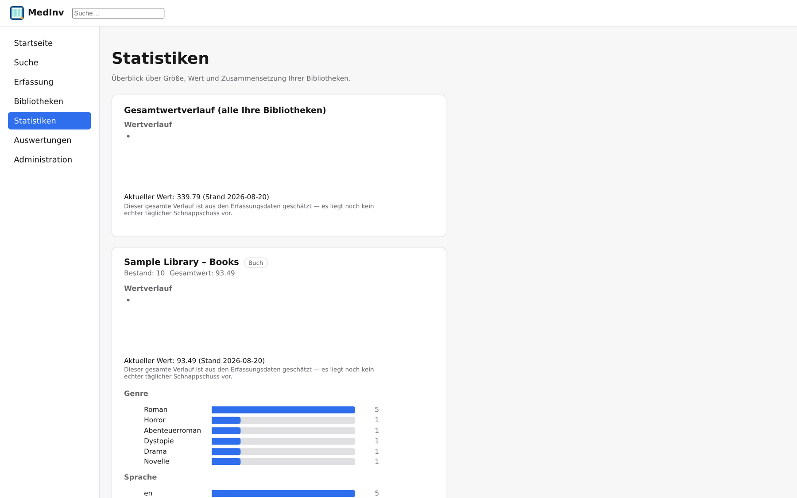
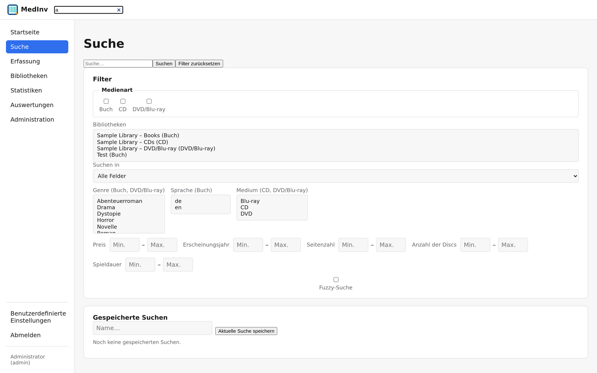
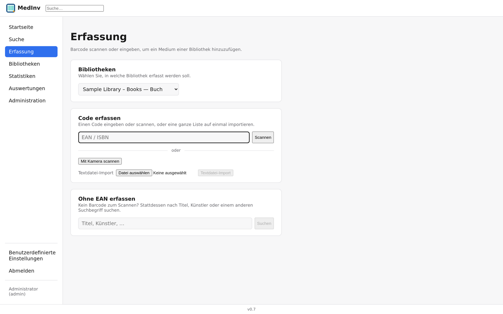
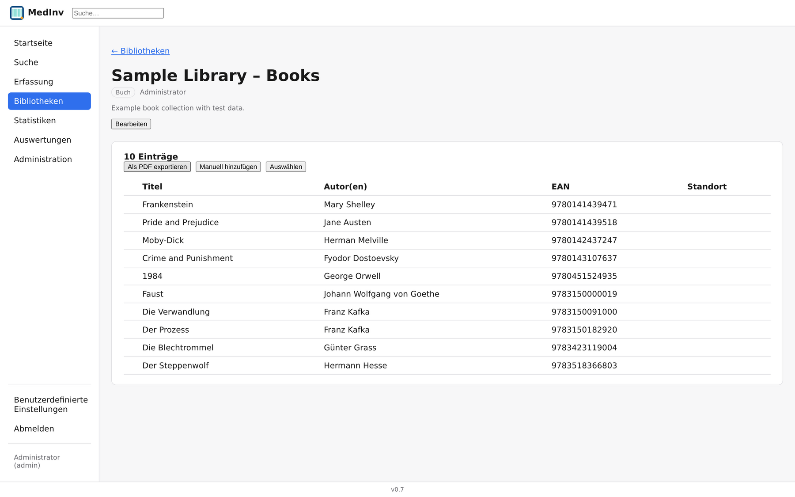
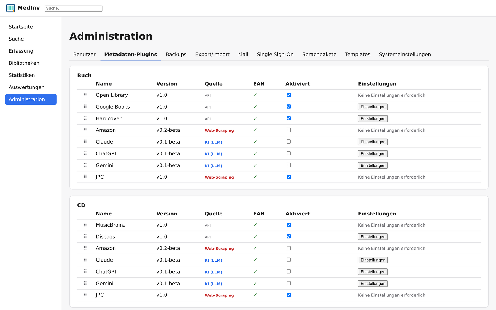
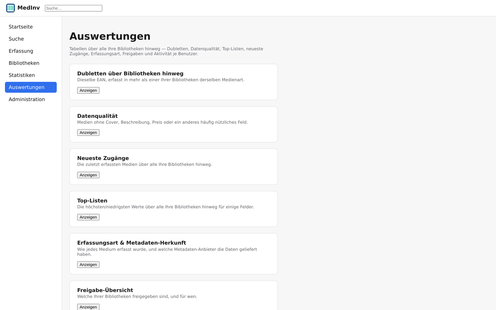
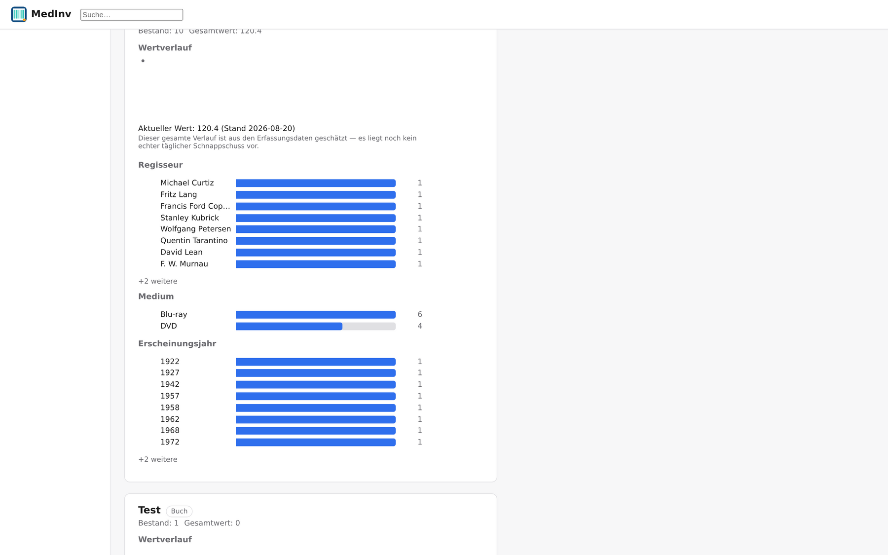

Medien & Bibliotheken
Drei eigenständige Medientypen — Bücher, CDs, DVDs/Blu-rays — mit fest zugeschnittenen Feldern statt generischem Freitext. Beliebig viele unabhängige Bibliotheken, granular pro Nutzer freigegeben.
MedInv katalogisiert physische Sammlungen automatisch: Barcode scannen, Titel & Cover per Metadaten-Recherche abrufen lassen, in beliebig vielen Bibliotheken organisieren — und jederzeit durchsuchen, auswerten und mit anderen teilen. Läuft komplett auf eigener Infrastruktur.

Sechs Bereiche, ein Werkzeug — vom ersten Scan bis zur letzten Sicherungskopie.
Drei eigenständige Medientypen — Bücher, CDs, DVDs/Blu-rays — mit fest zugeschnittenen Feldern statt generischem Freitext. Beliebig viele unabhängige Bibliotheken, granular pro Nutzer freigegeben.
Barcode scannen oder Titel eintippen — MedInv fragt bis zu neun Anbieter je Medientyp automatisch ab und lädt Cover lokal herunter. Kein Treffer ist eine Sackgasse: manuelle Erfassung bleibt immer möglich.
Volltextsuche mit echter Tippfehlertoleranz, feine Filter nach Genre, Sprache, Jahr oder Preis. Dazu Verteilungen und Wertverlauf pro Bibliothek — inklusive automatischer Währungsumrechnung.
Drei Kontostufen — Gast, Nutzer, Admin — plus feingranulare Freigabe je Bibliothek. Optionales OpenID-Connect-/OAuth2-Login neben klassischen Konten, mit Brute-Force-Schutz.
Automatische und manuelle Sicherungen mit konfigurierbarer Aufbewahrung, plus ein Sicherungspunkt vor jedem schemaändernden Update. Volle Instanzwiederherstellung oder gezielter Bibliotheks-Export.
18 mitgelieferte Sprachpakete, sechs Themes und ein eigenes CSS-Plugin-System für individuelles Aussehen — pro Instanz umschaltbar, mit Editor für weitere Sprachen.
Echte Oberfläche, echte Beispieldaten — keine Mockups.

Eine Volltextsuche über alle sichtbaren Bibliotheken hinweg, kombinierbar mit strukturierten Filtern — und einer echten, tippfehlertoleranten Fuzzy-Suche für den Fall, dass der Name nicht mehr ganz präsent ist.

Ein Barcode genügt: MedInv fragt alle aktivierten Metadaten-Anbieter parallel ab und führt die Ergebnisse Feld für Feld zusammen. Kein passender Code zur Hand? Die Freitextsuche nach Titel funktioniert genauso gut.

Jede Bibliothek zeigt ihren Bestand als sortier- und exportierbare Liste — inklusive PDF-Export, Mehrfachauswahl für Sammeländerungen und direktem Zugriff auf jedes Detail.

Über zwanzig Metadaten-Anbieter je nach Medientyp — API-basiert, per Web-Scraping oder KI-gestützt — lassen sich einzeln aktivieren, konfigurieren und testen, ganz ohne Codeänderung.

Sieben vorgefertigte Tabellen beantworten, was eine Statistik allein nicht zeigt: Wo gibt es Dubletten? Welchen Einträgen fehlen Cover oder Preis? Was kam zuletzt hinzu?

Jede Bibliothek bekommt eigene Verteilungen — Genre, Sprache, Regisseur, Medium, Erscheinungsjahr — plus Wertverlauf über die Zeit und automatische Währungsumrechnung bei gemischten Beständen.
MedInv läuft als einzelnes, in sich geschlossenes Docker-Image — eingebettete SQLite-Datenbank inklusive, kein separater Datenbank-Container nötig.
# Läuft danach unter http://localhost:8080
docker run -d \
--name medinv \
-p 8080:8080 \
-e MEDINV_ADMINUSER=admin@example.com \
-e MEDINV_ADMINPASS='ChangeMe123!' \
-v medinv-storage:/var/www/backend/storage \
--restart unless-stopped \
ghcr.io/vulture20/medinv:latest
Das Volume medinv-storage sorgt dafür, dass Datenbank, Cover und Backups Neustarts überleben — immer mitmounten.
Alle Optionen, inklusive MariaDB/PostgreSQL-Anbindung, stehen in der
README auf GitHub.
:latest zeigt immer auf die zuletzt veröffentlichte Version (z. B. :0.7 — einzelne Versionen bleiben ebenfalls als eigene Tags verfügbar). Für ungetestete, aktuellste Änderungen aus der Entwicklung gibt es :nightly.